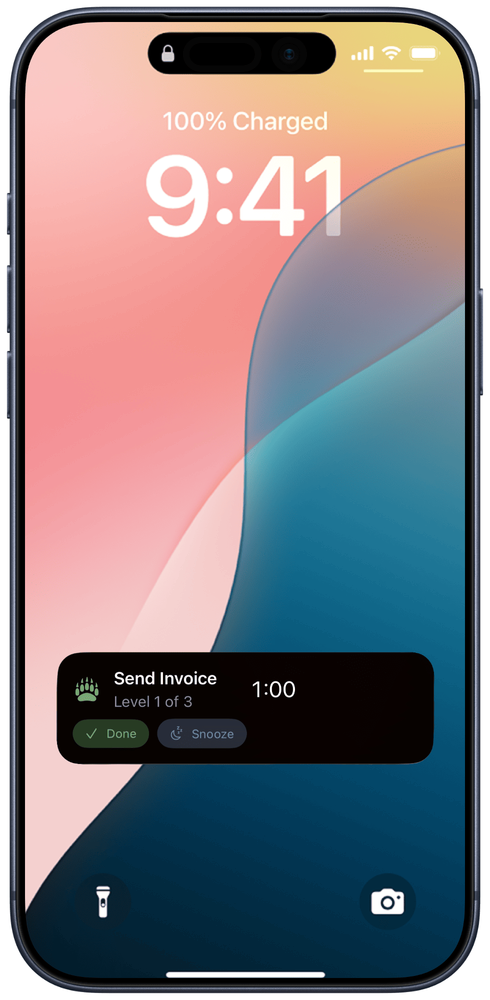
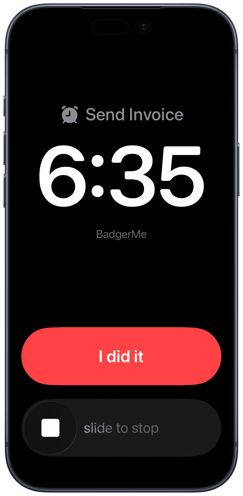

iPhone · iOS 26
The reminder that refuses to be ignored.
A Badger is a single-minded little agent you put in charge of one commitment. Its only job is to nag you — with alerts that escalate until you actually do the thing.
In App Store review now. Free — no ads, no subscription, no data collected.
It will not forget. That's the entire feature.
What it's for
The things you keep ignoring.
A normal reminder mentions a task once and gives up — which is exactly when the important ones slip. A Badger is for the handful that can't be allowed to.
- Medication The dose you can't miss, even on a bad day.
- Deadlines Invoices, filings, the form due by five.
- Callbacks The dentist, the pharmacy, the call you keep putting off.
- Chores with teeth Trash night, the leak, the thing you've rescheduled four times.
How a Badger works
One commitment. A ladder of alerts that keeps climbing.
Each Badger climbs a ladder of rungs. Every rung fires an alert, and each one can hit harder than the last — quiet at first, breakthrough at the top. You choose the shape.
Armed & quiet
A soft notification. Easy to catch, easy to act on. If you do the thing here, the Badger never has to raise its voice.
Escalating
Ignore it and the alerts get more insistent — louder, more prominent, harder to swipe past without a decision.
Breakthrough
The top rung sounds through Silent and Focus using Apple's alarm system, and simply repeats until you resolve it. There is no "gave up."

On your Lock Screen
It meets you where you already are.
A Badger doesn't wait for you to open the app. It rides the Lock Screen and the Dynamic Island as a live countdown — and you can settle it right there.
Quiet, at first
The early rungs are ordinary notifications carrying a live countdown. Tap Done and the Badger is satisfied; tap Snooze and it steps back — no unlocking, no opening anything.

Loud, when it has to be
Keep ignoring it and the top rung arrives as a full-screen alarm — sounding through Silent and an active Focus on Apple's alarm system, the same way a normal iPhone alarm does. One button ends it: I did it.

Privacy, in one breath
Nothing leaves your phone.
BadgerMe has no account, no cloud, and no server for your data to go to. Everything you create stays in the app's private storage on your device.
- — No data collected, ever
- — No accounts, no sign-in, no backend
- — No analytics, no advertising, no third-party SDKs
- — No tracking of any kind
This is not a growth strategy. It's the whole point. Read the policy.
Where to go next
Everything you might need.
Guide
How to use it
Badgers, ladders, snooze escalation, and the difference between silencing an alert and being done.
Support
Help & contact
Troubleshooting, permissions, and a safe way to reach a real person (it's me).
Privacy
The policy
The full, plain-language version of "nothing leaves your phone."